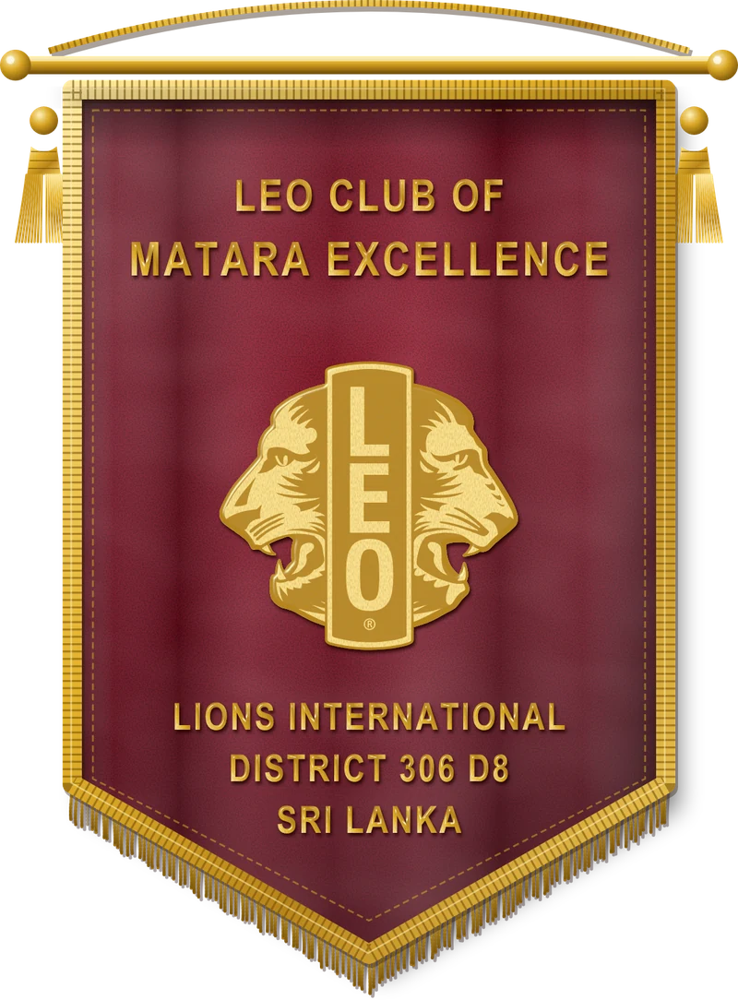

Leadership
Plan projects, manage time and guide teams to outcomes that matter.
About us
A youth club with a very old idea: if something needs doing in your town, you can be the one who does it.
Our club
The Leo Club of Matara Excellence is a youth service club in Leo District 306 D8, within Leo Multiple District 306 of Lions Clubs International. We’re sponsored by the Lions Club of Matara Excellence, who guide us and cheer us on while we do the work ourselves.
Our first big day was the District 306 D8 orientation. We said it then and we’ll say it again: this is only the beginning of Excellence.

Plan projects, manage time and guide teams to outcomes that matter.
Learn by doing: collaborate, execute and see the impact of service on your community.
Make lifelong connections with purpose-driven people while growing your skills and influence.
The Lions family
Lions Clubs International is the world’s largest service club organisation. Leos are its young members, with Lions alongside us as mentors.
Over 1.4 million members worldwide serving communities in more than 200 countries and regions. Motto: We Serve.
Young people aged 12 to 30, in two tracks: Alpha (ages 12–18) and Omega (ages 18–30), each with their own leadership journey.
Our Leo district sits alongside Lions District 306 D8, led in 2026/27 by District Governor Lion Ravindra Kalansooriya MJF MAF, under Lions Multiple District 306, which unites all Lions clubs in Sri Lanka.
The national body for Sri Lanka and the Maldives, organised into districts and led by an elected Multiple District President each Leo year.
Every Leo club is sponsored by a Lions club that guides, mentors and supports its projects. Our sponsor: Lions Club of Matara Excellence.
History
It started with a baseball coach and a good question from his son.
Melvin Jones, a Chicago businessman, calls on business clubs to serve their communities. The Lions motto becomes “We Serve.”
At the Lions convention in Ohio, Helen Keller asks Lions to become “knights of the blind in the crusade against darkness”, shaping the Lions’ commitment to vision care.
Jim Graver, a Lion from Glenside and baseball coach at Abington High School, Pennsylvania, starts the first Leo club, chartered on 5 December 1957, after his son asked why Lions had no service club for young people.
The Lions Club of Colombo, the mother club of the movement in the country, is formed with support from Lions in South India. Its first project distributes white canes to people with sight impairment.
Lions Clubs International formally adopts the Leo program as its youth service arm. The name stands for Leadership, Experience, Opportunity.
The Leo movement begins in Sri Lanka, growing into Leo Multiple District 306 with twelve districts, over 210 clubs and more than 10,000 members across Sri Lanka and the Maldives.
Leo Multiple District 306 expands into the Maldives, widening the family of clubs.
Our first step was the Leo District 306 D8 orientation. This is only the beginning of Excellence.
Our officers
Every project here starts with someone volunteering to make the first phone call. These are the Leos who lead the club this year.
Part of a worldwide family
 Lions Clubs International
Lions Clubs International
 Leo Clubs
Leo Clubs
 Leo Multiple District 306
Leo Multiple District 306